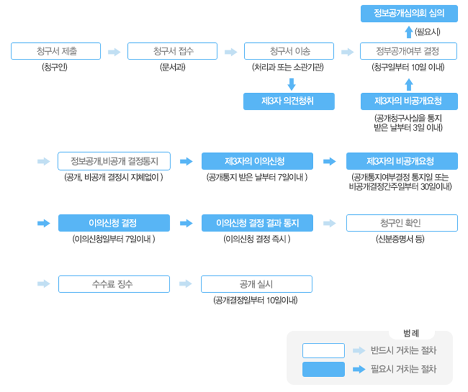

정보공개 컨텐츠 영역
정보공개제도
정보공개제도는 국가기관, 지방자치단체, 그 밖의 공공기관이 보유 관리하고 있는 정보를 국민의 청구에 의해 공개하거나, 중요 정보를 사전에 국민에게 제공함으로써 국민의 알권리를 보장하고 국정운영에 대한 국민의 참여와 투명성을 제고시키기 위한 제도적 장치입니다.
청구권자
#모든국민
모든국민은 청구인 본인 또는 그 대리인을 통하여
공공기관에 정보공개를 청구할 권리를 가지고 있습니다.
#법인·단체
법인과 단체의 경우는 대표자의 명의로 공공기관에
정보공개를 청구할 권리를 가지고 있습니다.
#외국인
청구권이 인정되는 외국인의 범위
· 국내에 일정한 주소를 두고 거주하는 자
· 학술·연구를 위하여 일시적으로 체류하는 자
· 국내에 사무소를 두고있는 법인 또는 단체
대상정보 공공기관이 직무상 작성 또는 취득하여 관리하고 있는 문서·도면·사진·필름·테이프·슬라이드 및 컴퓨터에 의하여 처리되는 매체등에 기록된 사항
정보공개 청구방법 대한민국 정보공개 포털(www.open.go.kr)을 통해 청구 가능하며, 정보공개 청구서를 작성하여 공사에 출석하여 제출하거나 우편·팩스로 제출할 수 있으며 2인 이상 다수인이 공동으로 정보공개를 청구할 때는 대표자1인을 선정하여 제출
공개여부결정
#공개기한
정보공개 청구를 받은 날부터 휴일을 제외한 10일 이내
(부득이한 경우 10일 연장 가능)에 공개여부를 결정
(당일 오후6시 이후에 접수된 경우 익일부터 가산)
#제3자의 의견청취
공개대상 정보가 제3자와 관련이 있는 경우 공개청구된
사실을 제3자에게 통지하고 필요시 의견을 청취
#제3자의 비공개요청
공개청구된 사실을 통지받은 제3자는 의견이 있을 경우
날부터 3일 이내에 공개하지 아니할 것을 요청할 수 있음.
#내부종결처리
정보공개 결정의 통지를 받은 자가 정당한 사유 없이 해당
정보의 공개 청구를 다시 한 경우, 정보공개 결정의 통지를
받은 후 같은 내용을 재청구하였을 경우
정보공개절차
이의신청
공개여부결정
#신청권자
공공기관의 비공개처분 또는 부작위로 법률상 이익을 침해받은 청구인, 공공기관이 제3자의 의사에 반하여 정보를 공개한 경우의 제3자
#신청기간
공개여부 결정통지를 받은 날 또는 비공개의 결정이 있는것으로 보는 날부터 ‘30일’이내, 제3자의 경우 공개통지를 받은 날부터 ‘7일’이내
#신청방법
정보공개(비공개)결정 이의신청서를 작성하여 당해 처분기관에 신청
#이의신청 결정 및 통지
접수일부터 ‘7일’이내에 수용여부 결정, 서면으로 통지
행정심판청구
#청구권자
공공기관의 비공개처분 또는 부작위로 법률상 이익을 침해받은 청구인
#청구기간 및 방법
처분이 ‘있음을 안 날’부터 90일, ‘있는 날’부터 180일 이내 제기, 심판청구서를 재결청 또는 피청구인의 행정청에 제출
#재결청은 원칙적으로 당해 행정청의 ‘직근상급 행정기관’이 되며, 예외적으로 당해 행정청 또는 소관감독행정 기관이 됨
#재결기간 및 통보
심판청구를 받은 날부터 60일 이내(부득이한 경우 30일 범위 안에서 연장 가능)에 재결하여 ‘재결서’ 통지
행정소송
#재소권자
공공기관의 비공개처분 또는 부작위로 법률상 이익을 침해받은 청구인
#제소기
처분 등이 ‘있음을 안 날’부터 90일, ‘있는 날’부터 1년 이내